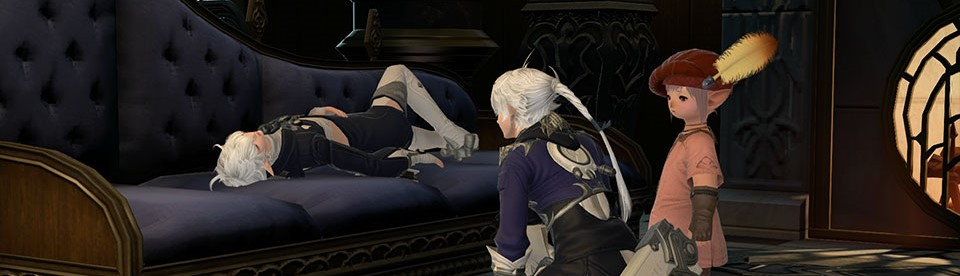
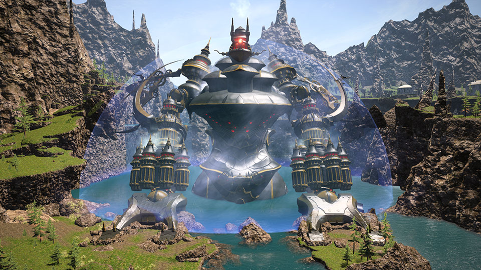
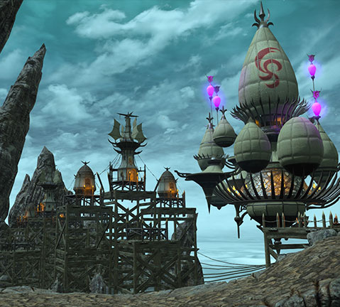
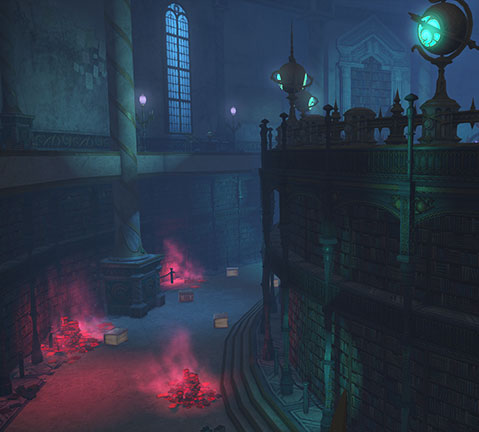
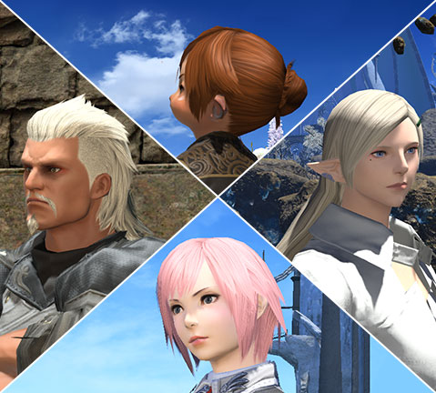
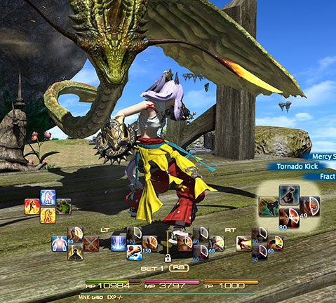

New main senario quest
Souls surrender patch 3.4

After a thousand years of bloodshed and sorrow, the shade of Nidhogg, rage incarnate, fell at last to the Warrior of Light. So it was that the Dragonsong War drew to a close, and the survivors, bloodied but unbowed, could begin to pick up the pieces. A new day dawns in Ishgard, and her champions may rest easy─if only for a moment. For every ending marks a new beginning.
New Raid
Alexander : The Creator :

Roundrox remains in dire straits, and soon the Illuminati will have all they need to rewrite history in their twisted image. As the black ink of fate is pressed to parchment, it is up to the Warrior of Light to wrestle the pen from the clutches of evil. Thus does our brave hero journey once more unto the breach, to discover what secrets lie at the heart of Alexander, and prove the would-be goblin prophet false.
New Trial
contaiment bay P1T6 :

History tells of a Meracydian nation comprised of a multitude of races, the foundations of which were built on the worship of a single deity. The "Goddess," as she was simply known, graced the souls of her worshipers with perfect equilibrium, binding their disparate societies in gilded chains of harmony.
In the present day, she is better known as Sophia, one of the incalculably powerful eikons of the Warring Triad. And after five thousand years of imprisonment, her failed plans for vengeance once more threaten to come to fruition. Defeat the wakened thralls and slay the stirring Goddess, lest her divine "balance" bring all the world to equal ruin!
new dungeons
xelphatol
the great gubal libary(hard)

Forced to flee the Black Shroud for fear of the elementals and their boundless wrath, the Ixal settled the windswept mountains of Xelphatol more than five hundred and fifty years ago. Since that day, they have labored tirelessly to take out an existence.
Though long since abandoned by its Sharlayan keepers, the Great Gubal Library does not want for visitants, its halls ever stirring with the voidsent guardians who walk its corridors. With danger at every turn, the fool who dares trespass here would find not wisdom but certain doom.
Extra updates
new hairstyles
an extra hotbar for the console players

New hairstyles have come to Eorzea! Whether you prefer your hair down, swept up, or even with an undercut, these new hairstyles for both men and women are sure to impress.
For the gamepad user who believes you can never have too many hotbars! Now you can display additional hotbars with a simple double tap of the trigger buttons! Customizable to display all the time or on demand─the choice is yours.